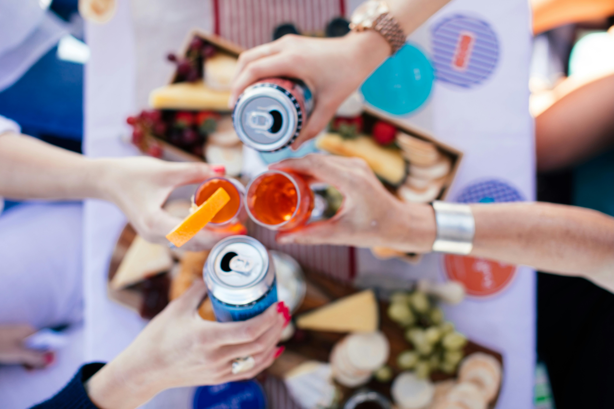
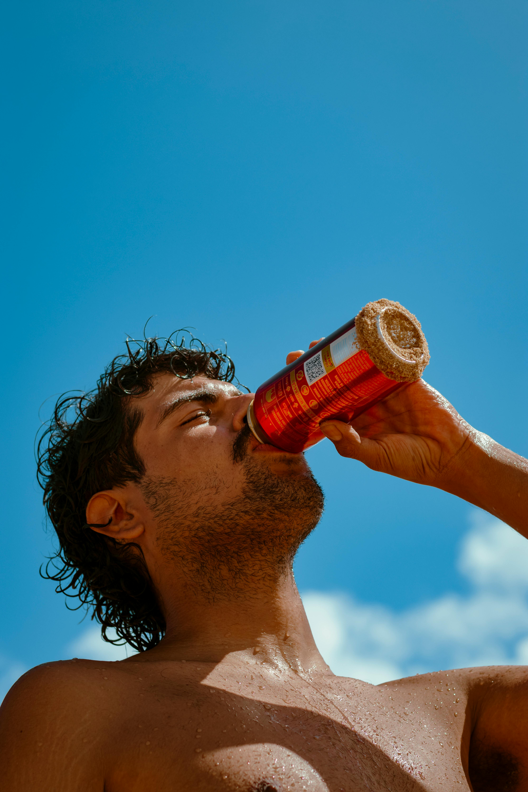
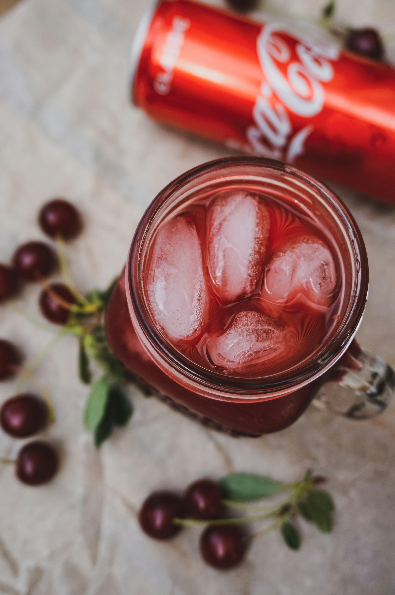

Combined Classes using Media Queries
nav: home, about, contact, buy

Zima is back—refreshed, reimagined, and fizzing with flavor for a whole new generation.
Originally launched in the ’90s as the first clear alternative to beer, Zima returns as a bold statement
in a sea of sameness, blending nostalgic cool with vibrant modernity.
Now reinvented as a crisp, sparkling seltzer, Zima features a playful lineup of
fruit-forward flavors like Lemon Limee, Mango Chili, Dragonfruit Citrus, and Strawberry Kiwi,
offering a light, refreshing, and endlessly drinkable experience that’s equal parts retro and now.
Designed for the curious, the fun-loving, and the flavor-obsessed, Zima’s sparkling clarity and
energetic branding reestablish it not just as a drink, but as a cultural icon reborn—bold,
bright, and unmistakably Zima. The Comeback with a Kick.

